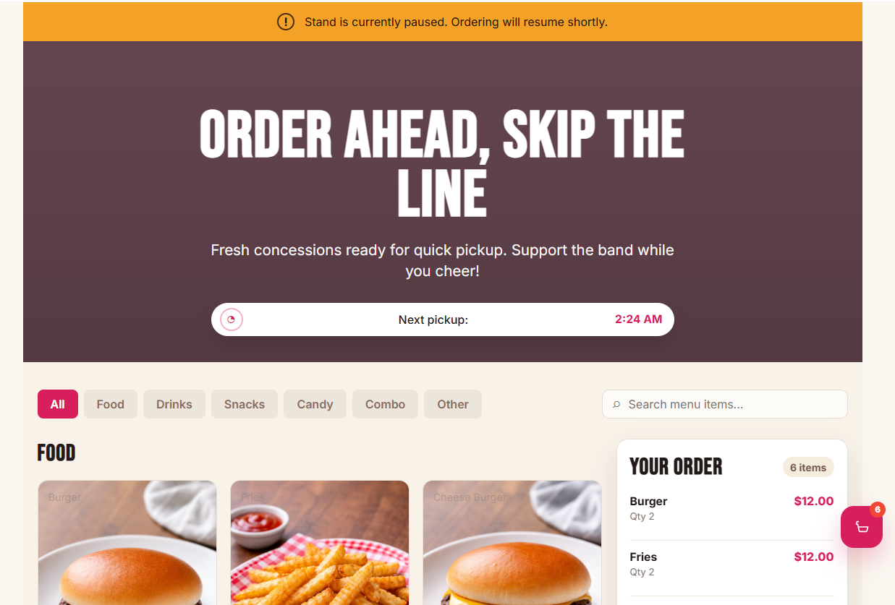
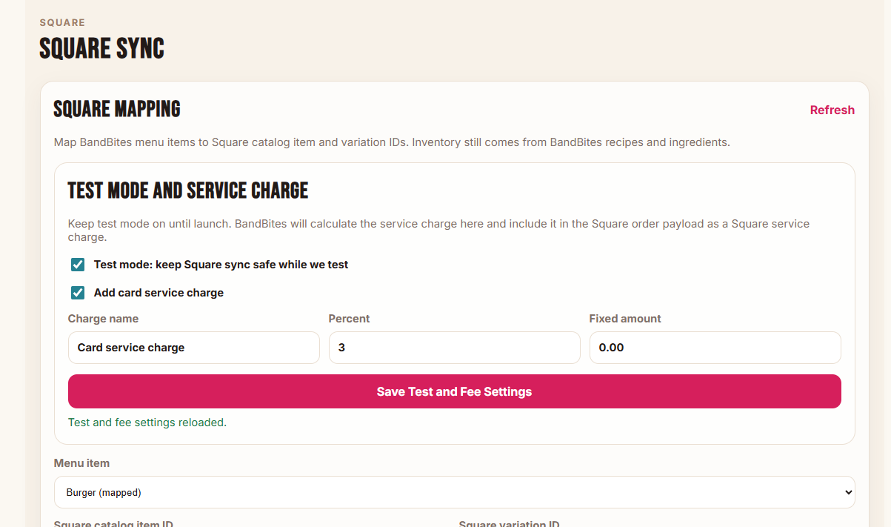
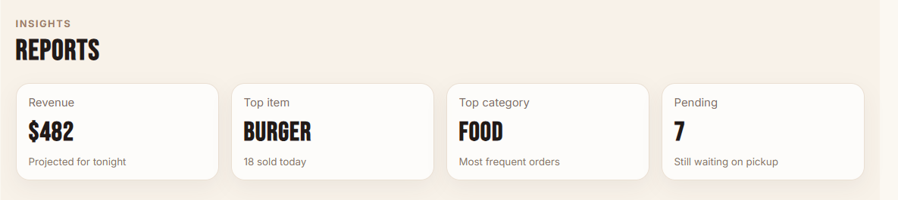
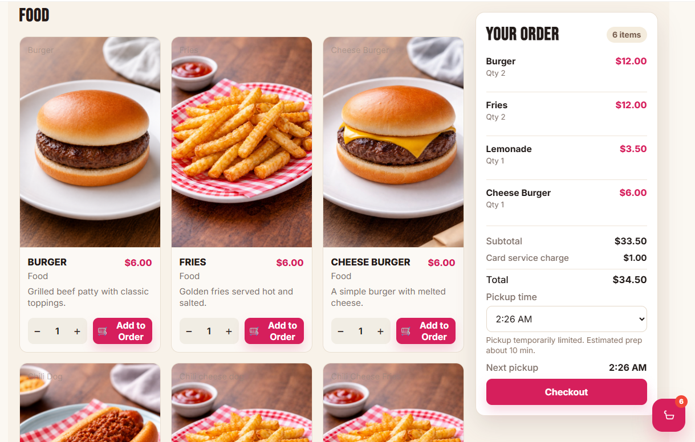

Online Ordering + Inventory Workflow
Remote Concession Ordering App
A custom order-ahead app showing how a small operation can manage menu items, orders, inventory, staff workflow, and payment-ready checkout in one system.
Sample app screens




The problem
Small concession stands and event operations often rely on window orders, paper notes, disconnected payment systems, and manual inventory counts. During busy events, lines get long, staff lose visibility, and inventory can run out unexpectedly.
What was built
A remote ordering app with a customer-facing menu, order queue, inventory tracking, and kitchen or staff display workflow.
Key features
How it works
Sample screens
Customer menu
Simple ordering interface with item cards and sold-out states.
Cart and checkout
Order summary with pickup notes and payment-ready layout.
Kitchen display
Tablet-friendly queue of new, active, and completed orders.
Inventory dashboard
Live counts that drop as orders are placed.
Menu editor
Admin screen for item names, pricing, and availability.
Business value
This pattern can also be used for
Have a workflow like this?
If your business or organization is managing data, approvals, orders, requests, or reports through spreadsheets and email, Palmetto Business Automation can help turn that process into a custom web app.